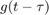

Práctica 4: Convolución y correlación de señales en tiempo continuo y tiempo discreto
Quijano Gutiérrez Luis Humberto
Contents
Objetivos
- Conocer métodos básicos de integración numérica
- Manipulación de instrucciones en MATLAB
- Simular convoluciones y correlaciones de señales continuas
- Simular convoluciones y correlaciones de señales discretas
Introducción
Convolución:
Por definición, la convolución es la integral de menos infinito a infinito del producto de dos señales, una de ellas invertida y trasladada. La convolución posee varias propiedades:
- Conmutatividad
- Asociatividad
- Distributividad
entre otras, pero estas son las más aplicadas.
Para realizar una convolución se tienen varios métodos, los cuales se van a mostrar a continuación:
Método analítico:
Se tiene dos señales: y . Para el método analítico se debe tener las expresiones analíticas de las señales. Una vez que se tengan las expresiones analíticas, si se quiere hacer la convolución de , se sustitulle en la por , quedando ; y en se sustitulle por , quedando . Se aplican propiedades de intragrales para separar la integral en una suma de integrales (si es posible) y, una vez realizada la sustitución, se tiene que realizar una interpretación para determinar cuando sobrevive la convolución.

Método semigráfico:
Este método nos sirve para encontrar los límites de integración de la convolución. De igual forma, se deben tener dos señales y . A la señal se le sustituye por y queda la misma geometría, la unica diferencia es el nombre del eje horizontal. Para la señal se sustituye por , pero, para que se facilite la convolución, primero se invierte la señal y luego se empieza a trasladar.
Para este método, se tiene que realizar por casos, y cada caso corresponde a un cambio en la fórmula de las señales. A continuación, se muestra una animación de como se ve gráficamente una convolución, en este caso se realizó de a , por practicidad. Notese que la convolución cambia de forma cuando entra en la segunda fórmula de :

Correlación:
Por definición, la convolución es la integral de menos infinito a infinito del producto de dos señales, una de ellas trasladada. A diferencia de la convolución, la correlación no conmuta, es decir, no es lo mismo la correlación de con que la correlación de con . Hay 3 definiciones para realizar la corelación:
- Mediante la convolución de
Método analítico:
Este método es muy similiar al de convolución ya que se necesitan las expresiones analíticas de las señales, la unica diferencia es la sustitución de la variabe t, ya sea y o y ; estas parejas de sustituciones son equivalentes siempre y cuando se respeten dichas parejas. Una vez realizada la sustitución, se aplican propiedades de las integrales para separar la integral en varias integrales y luego se realiza la interpretación para ver cuando sobrevive la correlación y cuando no.
Método semigráfico:
Los pasos a seguir en el método gráfico son los siguientes:
- Dibujar y
- Agregar un "$$-t$" en cada cambio de fórmula de
- Se traslada de tal forma que se obtenga

- Encontrar los valores de
- Se encuentran los valores de de tal manera que los valores encontrados de sean validos
- Se repiten los pasos 4, 5 y 6 para todos los valores de t reales
Correlación mediante convolución:
Para este método se toma en cuenta la propiedad de que la correlación es la convolución de la primera señal con la inversión horizontal de la segunda, , y se realizan los pasos de una convolución.
Problema 1
Problema 2
Problema 3
Problema 4
En este problema se realizó la correlación de la señal f(t) con la señal g(t) mediante la convolución. En este método, se invierte la segunda señal, en este caso g(t). Como dicha señal es simetrica, si la invertimos queda igual a la original, por lo tanto la correlación es igual a la convolución.
Problema 5
n=-3:3; x=[-9 -6 -3 0 3 6 9]; h=[0 4 2 0 2 4 0]; c=conv(x,h); nmin=-(length(x)+length(h)-2)/2; nmax=(length(x)+length(h)-2)/2; nt=nmin:nmax; stem(nt,c)
Referencias
Lathi, B. P., (2005). Linear Systems and Signals. EUA: Oxford university Press